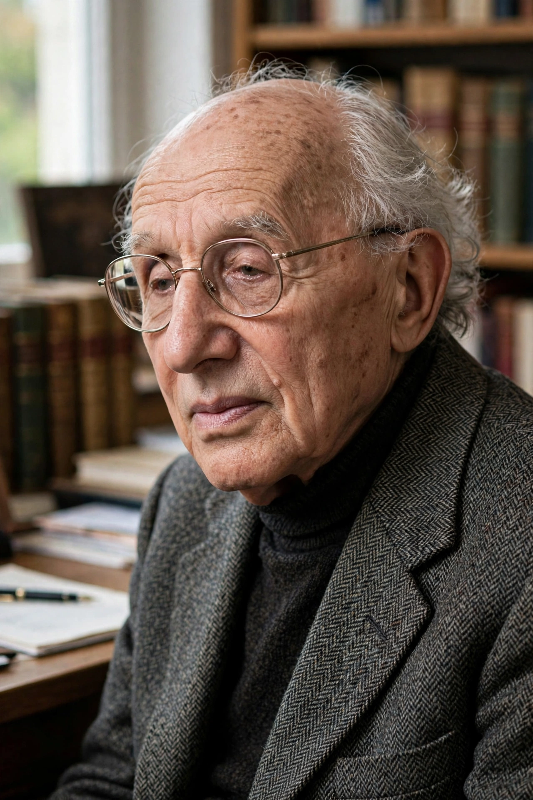

Born: 22 June 1897, Breslau, German Empire
Died: 1 August 1990, Amsterdam
Norbert Elias was a German sociologist who fled Nazism for Britain and developed "figurational" or process sociology, analysing long-term transformations of manners, state formation and human interdependence.
His masterwork The Civilizing Process (1939, recognised widely only after its 1969 reissue) traced how European standards of behaviour — table manners, bodily functions, violence — grew more restrained over centuries as state monopolies on violence and lengthening chains of interdependence reshaped personality and socialisation.
Elias taught at Leicester, where he influenced British sociology, and wrote on sport and leisure, time, dying, and the Germans. His concept of figurations — networks of interdependent people — offered an alternative to both individualism and structuralism in social theory.